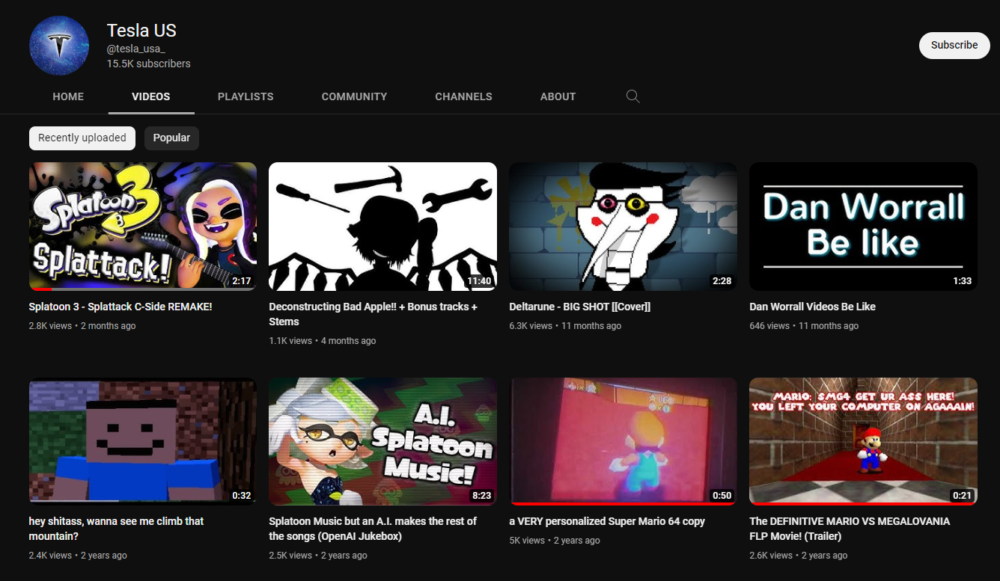

Wanted to compete with pickelhau.be and realsomeguy.github.io so I made this very very cool page that is not writen in notepad and that is not improvised at all and that I didn't spend 3 minutes watching a youtube tutorial to know how to do.
No not at all üòé
Hi I'm the dude who made Deltalovania and Sans is Patrick video!!
though I'm not very proud of that shit
on december 5th of this year (2022 AS I'M WRITING THIS) my YOUTUBE CHANNEL (and also my old Gmail account) got hacked!!!
I couldn't log into my gmail account because my password had been changed.
Tried recovery email and NOTHING, tried recovery phone number and NOTHING, EVEN MY 2FA WAS SOMEHOW BYPASSED AND TURNED OFF
Some Guy in my discord server was like "DAN LOOK AT YOUR YOUTUBE CHANNEL"
shit was the weirdest shit??? Suddenly I found out that I was fucking TESLA
YES I did notify Youtube about what was going on, they were like "OH you can ask GOOGLE to help you recover your account while WE RECOVER YOUR CHANNEL"
NEEDLES to SAY GOOGLE didn't help SHIT, they kept me going in circles doing tons of nothing.
On a serious note now, it's funny how Google is all like "We want to make your account as secure as possible! 2FA! Recovery phone number! Recover email address!"
but when all those security features are hijacked and bypassed then the damn security features turn against you!
WHILE GOOGLE was having me do acrobatics, Youtube was trying to recover my channel since it accidentally got deleted because "Impersonation" or some shit.
AND IT WORKED, they transfered the ownership to my new gmail account and everything's back on track.
The thing is up and still working like the good'ol channel I used to have!
STILL DOESN'T MEAN THAT I HAVE RECOVERED MY OLD GMAIL ACCOUNT DIJGHIKGJADKGHJKLDAGHJKLAD thanks Google for being very useful!!! (very sarcastic)
ALSO the stupid fucking scam livestreams are archived lmao I don't know if that's a good thing or a bad thing...

People, you gotta be REALLY FUCKING CAREFUL doing shit online.
Don't download weird ass files, don't enter shaddy ass looking websites (Mine is very shaddy looking I know BUT I SWEAR IT DON'T HAVE ANY VIRUSES‼️)
Don't click suspicious ass links. AND FOR THE LOVE OF GOD go get some good amazing antivirus like Malwarebytes, AVG, Avast or even ESET. Windows Defender will only get you so far.
But by FAR, the best antivirus is your own COMMON SENSE.
No, I wasn't stupid enough to click Free Discord Nitro links. I don't even remember entering any weird ass sites when everything happened?
Really shows that NO ONE is safe online. Y'all gotta be careful as shit for real...